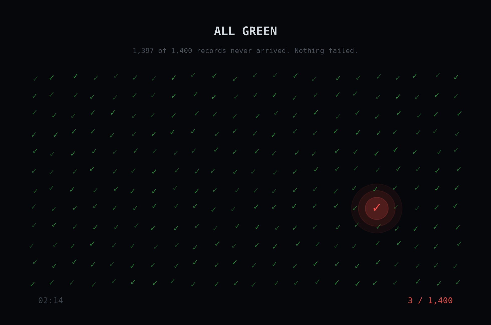
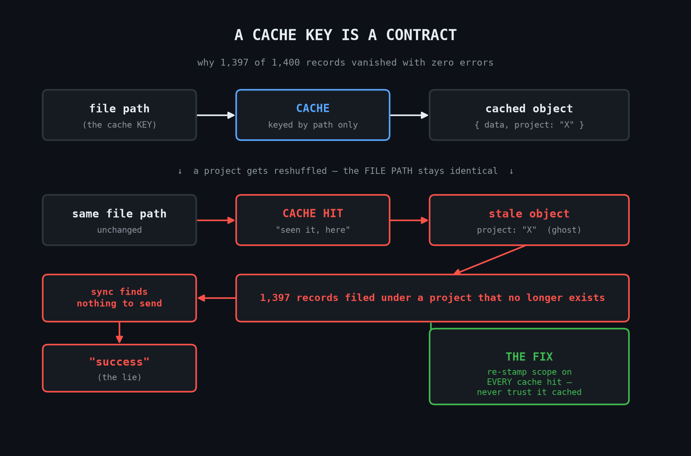

3 of 1,400

A sync job reported success while it had actually sent 3 of 1,400 records. No error was thrown anywhere; the only proof something was wrong was a number that didn't add up. The cause was a cache key that kept remembering which project a file belonged to, even after that context changed. The doctrine that came out of it: a cache key can only be trusted to remember things that stay true for that key forever. Anything that can change later has to be recomputed, never cached.
A sync job reported success while it had actually sent 3 of 1,400 records. No error was thrown anywhere; the only proof something was wrong was a number that didn't add up. The cause was a cache key that kept remembering which project a file belonged to, even after that context changed. The doctrine that came out of it: a cache key can only be trusted to remember things that stay true for that key forever. Anything that can change later has to be recomputed, never cached.
Every test was green. No error, no crash, nothing red anywhere. And 1,397 records had just quietly vanished.
I run the whole thing alone. The agent that watches a machine and syncs its data up to the dashboard, the database behind it, the boxes it all sits on. In most companies that is a few teams. That night it was me, staring at a number that made no sense. One data source had synced 3 records. It should have synced about 1,400. Every other source was fine. No exception had been thrown. Nothing had failed. It had simply, silently, sent almost nothing, and reported success.
That is the bug that scares me more than any crash. A crash tells you where it hurts. This just smiles and lies.
The trap I had to not fall into was theorizing. At midnight your brain offers you a dozen confident stories. "It's an ignore rule filtering the files." "It's a weird encoding the reader skips." "The upload is failing." Every one of them sounded right. Every one was wrong, and I only knew that because I refused to argue with the code and made it show me numbers instead.
So I wrote a throwaway script that ran the exact production scan path in isolation and printed a count. It found all 1,400 files. So the scan was fine. Then I counted what had actually landed in the local store before upload: 3. That one move split the problem in half. The data was not lost on the way out. It was lost between the scan and the store, in my own code, before the network was ever involved. Stop guessing. Find the first place the number goes wrong.
The first wrong number lived in a cache.
To keep the sync fast, I did not re-read a file I had already seen. The cache key was the file's path. Simple, fast, and fine, until it wasn't. Because the thing I cached was not just the file's contents. The cached object also carried which project the records belonged to. And that day, projects had been reshuffled: a folder that used to be its own project was now nested inside another one.
The file's path had not changed. So the cache said "seen it, here you go" and handed back the old object, still stamped with a project that no longer existed. Those 1,397 records got filed under a ghost. The sync looked for that project, found nothing to send, and cheerfully reported success.

The actual lesson, the one worth stealing:
A cache key is a contract. If your key is the file path, then the value you store under it may only contain things that are true for that path forever. The file's bytes qualify. "Which project owns this" does not, because that can change while the path stays the same. The moment your key is global but your value carries something scoped, you have a correctness bug sitting quietly in your code, waiting for the scope to change so it can go off.
The fix was three things, in order of how much they mattered:
- Re-stamp the scoped fields on every cache hit. Never trust scope-specific data the cache carries. Recompute "which project" from the current context each time you pull from the cache. The cache is allowed to remember the file. It is not allowed to remember the world around the file.
- Cascade your cleanup. The reshuffle had deleted the old parent project but left its child records behind, and those orphans are what poisoned the cache in the first place. When you delete a parent, delete or reattach its children in the same breath, or they come back as ghosts.
- Chunk the upload. Once attribution was fixed and all 1,400 actually tried to send, the single one-shot request timed out on the big sources. Stream it in bounded batches; save the expensive "finalize and prune" step for the last one.
And the meta-lesson, the one I now build into everything: silent partial success is worse than a crash. A system that can send 3 of 1,400 and call it a win is a system that is lying to you by design. So I added the check I should have had from the start, the one that screams "expected ~1,400, got 3" instead of trusting "no error means fine." A number that asserts what it expects is cheap. A day lost to a ghost project is not.
It was 3:40 when it went green for real. All 1,400.
I did not feel like a hero. I felt something quieter. Every piece of that night could be automated. The scan, the cache, the upload, the retries, one day better than me. Except the one thing that actually mattered: being the person who looked at "3" and knew, in his gut, that 3 was a lie, then had the discipline to chase it to a cache key instead of a comforting story.
That is the part that does not automate. Not the typing. The judgment that smells the wrong number, and the stubbornness to not stop until it confesses.
I am going to write more of these. The real bugs, the real fixes, the reasoning underneath, in full. If you want to become the engineer the machine cannot replace, come with me.
→ I write this weekly. [subscribe]